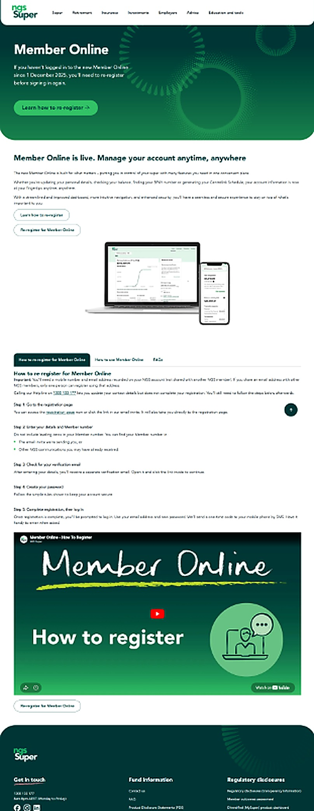

Case study
A month offline,
without losing members
A superannuation fund replaced its administration platform to get better, more robust member data. The cost was a month long blackout and every member registering again from scratch.
I owned the website, digital experience and communication side of the transformation.
01
The problem
The fund needed better member data than its administration platform could give it. Getting there meant replacing the platform, and replacing the platform meant a month with no portal and every member registering again.
That is a long time to lock people out of their own money. The operational case was sound. The cost to members was mine to manage.
Fixed cutover date
Set by operations, not by communications.
A month with no self service
No balance, no statements, no account.
Every member registering again
No silent migration. Everyone had to act.
Acquisition never paused
People still joined, with nowhere to land.
Six functions signing off
Marketing, member services, service delivery, product, compliance, technology.
02
The transformation hub
One destination that carried members before, during and after the change. Every channel pointed at it, so a correction made once was a correction made everywhere.

Questions members were actually asking
FAQs built from the contact centre queue, in plain language, ordered by urgency at each stage of the rollout rather than by internal topic.
Dated updates in one place
A single running record of what was changing and when. Every channel pointed back here, so messaging stayed consistent across teams.
Guidance, not just notices
Content that walked members through what was changing, why, and how to register again, including a how to video for people who would rather watch than read.
A way out to the next thing
Clear paths from awareness to action. Register, log in, get help. A vanity URL the contact centre could read down the phone in one breath.
03
What I owned
The website, the digital experience and the communication around it. What got said, where it lived, when it went out, and what we deliberately left out. In practice that meant treating the blackout as a product problem rather than a communications schedule.
- Took my questions from the contact centre queueI pulled what members were actually asking and rewrote the FAQs continuously through the transition, rather than publishing a fixed set and hoping.
- Built a temporary environment so people could still joinAround 150 did, while the portal was dark and with all acquisition marketing paused for months either side.Without somewhere to capture them, that is a month of lost members nobody would have counted.
- Timed communications to when members needed themNot to the project plan. People got what was relevant to them at the point it became relevant.
- Worked directly with complaints and the contact centreRather than through a reporting line. Their queue told me faster than anything else whether the content was working.
04
What it took
Part 01, delivered at scale
Content, audit and member communication across a three month delivery window.
Legacy administration terms refreshed across the site so search and navigation matched the new experience.
A full content audit for tone, accuracy and member relevance, not just for broken references.
Four messages across five member cohorts, segmented so people got what applied to them.
The hub was maintained throughout the rollout rather than published once and left alone.
Part 02, what changed for members
Less friction for members, and a quieter contact centre.
Member complaints halved during the rollout, against clear proactive communication and one source of truth.
Call volume and duration both dropped, helped by a vanity URL staff could share over the phone and a how to video on the hub.
FAQs and key dates in one authoritative place staff could direct members to, rather than five versions of the truth.
05
The call I got wrong
Partway through, the contact centre asked me to slow the email programme. Their concern was reasonable. More emails would mean more calls, and they were already stretched. I agreed and eased off.
3xThe increase in calls after we stopped communicatingThe assumption underneath the request, that communication generates calls, was backwards. Members locked out of their accounts try to solve it themselves first. They check their inbox, the portal notice and the website before they pick up the phone. When we stopped communicating, we took away the way members were helping themselves and pushed everyone onto the one channel we were trying to protect.
I would not slow the communications again. I would give the contact centre better tools instead, starting with a recorded FAQ on the hold tone so the queue answers some of the questions itself.
Communication was not creating the calls. It was preventing them.
06
Outcome
Complaints halved during the rollout and call volume was down 60 per cent by week two. Around 150 people joined during a period when the fund had no live portal and no marketing running. They found the fund on their own, and they only joined because there was somewhere for them to go.
The spike in calls was mine. It changed how I would plan the next one.